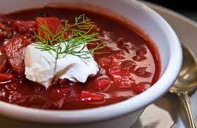

Ukrainian Red Borscht Soup

My friend's mother from Ukraine taught me this recipe for the classic beet soup. It's as authentic as it gets. It can be served vegetarian-style by omitting the sausage.
Ingredients
- Pork Sausage
- Beets
- Carrots
- Oil
- Tomato Paste
- Water
- Onion
- Cabbage
- Diced Tomatoes
- Garlic
- Sugar
- Sour Cream
- Parsley
Steps
- Brown Sausage
- Fill pot with water. Bring to boil. Add sausage and cover. Return to boil. Add the beets, and cook until they have lost their color. Add the carrots and potatoes, and cook until tender, about 15 minutes. Add the cabbage, and the can of diced tomatoes.
- Heat the oil in a skillet over medium heat. Add the onion, and cook until tender. Stir in the tomato paste and water until well blended. Transfer to the pot. Add the raw garlic to the soup, cover and turn off the heat. Let stand for 5 minutes. Taste, and season with salt, pepper and sugar.
- Ladle into serving bowls, and garnish with sour cream, if desired, and fresh parsley.